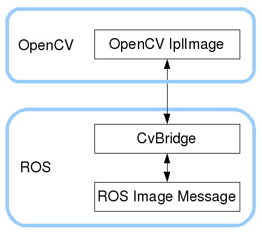

双目相机驱动¶
相机数据获取¶
双目相机一般有四种模式
- 左单目模式：LEFT_EYE_MODE
- 右单目模式：RIGHT_EYE_MODE
- 红蓝模式：RED_BLUE_MODE
- 双目模式：BINOCULAR_MODE
由于部分摄像头本身输出的图像宽高已固定，则其中1、 2、 3模式直接显示即可，双目模式4获取到的左右两目的图片被压缩在同一张图的左右两侧，故而需要将读到的图片在水平方向拉伸，然后进行裁剪。如一张图片分辨率为640x480，拉伸后为1280x480，裁剪得到左右两张相同大小图片。
import cv2
cam_mode_dict = {
'LEFT_EYE_MODE': 1,
'RIGHT_EYE_MODE': 2,
'RED_BLUE_MODE': 3,
'BINOCULAR_MODE': 4,
}
if __name__ == '__main__':
capture = cv2.VideoCapture(0)
camera_mode = 'BINOCULAR_MODE' # 双目模式
cam_mode = cam_mode_dict[camera_mode]
while True:
ret, frame = capture.read()
if cam_mode == 4: # 双目模式，拆分展示
expand_frame = cv2.resize(frame, None, fx=2, fy=1)
left_image = expand_frame[0:480, 0:640]
right_image = expand_frame[0:480, 640:1280]
cv2.imshow("left", left_image)
cv2.imshow("right", right_image)
else: # 其他模式，直接展示
cv2.imshow("video-" + camera_mode, frame)
key = cv2.waitKey(10) & 0xFF
if key == ord('q'):
break
cv2.destroyAllWindows()
修改输出数据¶
- 安装UVC相机管理工具
Manage dynamic controls in uvcvideo
sudo apt install uvcdynctrl
根据相机的4种模式，编写控制代码
import shlex
import subprocess
import sys
cam_mode_dict = {
'LEFT_EYE_MODE': 1,
'RIGHT_EYE_MODE': 2,
'RED_BLUE_MODE': 3,
'BINOCULAR_MODE': 4,
}
cam_mode = cam_mode_dict['BINOCULAR_MODE']
command_list = [
"uvcdynctrl -d /dev/video{cam_id} -S 6:8 '(LE)0x50ff'",
"uvcdynctrl -d /dev/video{cam_id} -S 6:15 '(LE)0x50f6'",
"uvcdynctrl -d /dev/video{cam_id} -S 6:8 '(LE)0x2500'",
"uvcdynctrl -d /dev/video{cam_id} -S 6:8 '(LE)0x5ffe'",
"uvcdynctrl -d /dev/video{cam_id} -S 6:15 '(LE)0x0003'",
"uvcdynctrl -d /dev/video{cam_id} -S 6:15 '(LE)0x0002'",
"uvcdynctrl -d /dev/video{cam_id} -S 6:15 '(LE)0x0012'",
"uvcdynctrl -d /dev/video{cam_id} -S 6:15 '(LE)0x0004'",
"uvcdynctrl -d /dev/video{cam_id} -S 6:8 '(LE)0x76c3'",
"uvcdynctrl -d /dev/video{cam_id} -S 6:10 '(LE)0x0{cam_mode}00'",
]
def usb_ctrl(id):
for command in command_list:
subprocess.Popen(shlex.split(command.format(cam_id=id, cam_mode=cam_mode)))
if __name__ == '__main__':
id = sys.argv[1]
usb_ctrl(id)
- 使用shell脚本修改输出
#!/bin/bash
id=$1
mode=$2
uvcdynctrl -d /dev/video${id} -S 6:8 '(LE)0x50ff'
uvcdynctrl -d /dev/video${id} -S 6:15 '(LE)0x00f6'
uvcdynctrl -d /dev/video${id} -S 6:8 '(LE)0x2500'
uvcdynctrl -d /dev/video${id} -S 6:8 '(LE)0x5ffe'
uvcdynctrl -d /dev/video${id} -S 6:15 '(LE)0x0003'
uvcdynctrl -d /dev/video${id} -S 6:15 '(LE)0x0002'
uvcdynctrl -d /dev/video${id} -S 6:15 '(LE)0x0012'
uvcdynctrl -d /dev/video${id} -S 6:15 '(LE)0x0004'
uvcdynctrl -d /dev/video${id} -S 6:8 '(LE)0x76c3'
uvcdynctrl -d /dev/video${id} -S 6:10 "(LE)0x0${mode}00"
通过ROS发布图像数据¶
我们通过Python的OpenCV库得到的图像是OpenCV的数据格式，而ROS使用其sensor_msgs/Image消息格式发布图像。CvBridge是一个ROS库，提供ROS和OpenCV之间的转换。可以在vision_opencv的cv_bridge软件包中找到CvBridge

- 相机标定需要将双目的图像发布到指定topic，本例为：
左目：
stereo/left/image_raw右目：
stereo/right/image_raw
#!/usr/bin/python2
# encoding:utf-8
import rospy
import cv2
import shlex
import subprocess
from std_msgs.msg import Header
from sensor_msgs.msg import Image
from cv_bridge import CvBridge, CvBridgeError
class StereoCamera:
def __init__(self):
"""
初始化ros
"""
rospy.init_node("stereo_camera_node", anonymous=True)
self.bridge = CvBridge()
self.left_image_pub = rospy.Publisher("stereo/left/image_raw", Image, queue_size=1)
self.right_image_pub = rospy.Publisher("stereo/right/image_raw", Image, queue_size=1)
self.msg_header = Header()
# self.ros_image = Image()
# self.ros_image.height = 480
# self.ros_image.width = 640
self.cam_id = 0
self.camera = cv2.VideoCapture(self.cam_id)
def pub_image(self, publisher, image, header):
try:
ros_image = self.bridge.cv2_to_imgmsg(image, "bgr8")
ros_image.header = header
publisher.publish(ros_image)
except CvBridgeError as e:
print e
def run(self):
if not self.camera.isOpened():
print "[ERROR] camera not opened"
return
cam_mode_dict = {
'LEFT_EYE_MODE': 1,
'RIGHT_EYE_MODE': 2,
'RED_BLUE_MODE': 3,
'BINOCULAR_MODE': 4,
}
cam_mode = cam_mode_dict['BINOCULAR_MODE']
command_list = [
"uvcdynctrl -d /dev/video{cam_id} -S 6:8 '(LE)0x50ff'",
"uvcdynctrl -d /dev/video{cam_id} -S 6:15 '(LE)0x50f6'",
"uvcdynctrl -d /dev/video{cam_id} -S 6:8 '(LE)0x2500'",
"uvcdynctrl -d /dev/video{cam_id} -S 6:8 '(LE)0x5ffe'",
"uvcdynctrl -d /dev/video{cam_id} -S 6:15 '(LE)0x0003'",
"uvcdynctrl -d /dev/video{cam_id} -S 6:15 '(LE)0x0002'",
"uvcdynctrl -d /dev/video{cam_id} -S 6:15 '(LE)0x0012'",
"uvcdynctrl -d /dev/video{cam_id} -S 6:15 '(LE)0x0004'",
"uvcdynctrl -d /dev/video{cam_id} -S 6:8 '(LE)0x76c3'",
"uvcdynctrl -d /dev/video{cam_id} -S 6:10 '(LE)0x0{cam_mode}00'",
]
for command in command_list:
subprocess.Popen(shlex.split(command.format(cam_id=self.cam_id, cam_mode=cam_mode)))
print "--------cam_id:{}, cam_mode:{}".format(self.cam_id, cam_mode)
rate = rospy.Rate(20)
while not rospy.is_shutdown():
ret, frame = self.camera.read()
if not ret:
print('[ERROR]: frame error')
break
# cv2.imshow("image", frame)
# key = cv2.waitKey(10) & 0xFF
expand_frame = cv2.resize(frame, None, fx=2, fy=1)
left_image = expand_frame[0:480, 0:640]
right_image = expand_frame[0:480, 640:1280]
self.msg_header.frame_id = 'stereo_image'
self.msg_header.stamp = rospy.Time.now()
self.pub_image(self.left_image_pub, left_image, self.msg_header)
self.pub_image(self.right_image_pub, right_image, self.msg_header)
rate.sleep()
self.camera.release()
if __name__ == '__main__':
camera = StereoCamera()
camera.run()
USB设备重置¶
有时，可能会因为各种各样的原因，导致usb设备不能正常使用，我们可以通过c代码，给其发送reset重置指令，恢复其状态，从而避免重新拔插设备。以下我们直接编译一个工具对设备进行重置。
- 创建
usbreset.c文件，写入以下代码：
/* usbreset -- send a USB port reset to a USB device */
#include <stdio.h>
#include <unistd.h>
#include <fcntl.h>
#include <errno.h>
#include <sys/ioctl.h>
#include <linux/usbdevice_fs.h>
int main(int argc, char **argv) {
const char *filename;
int fd;
int rc;
if (argc != 2) {
fprintf(stderr, "Usage: usbreset device-filename");
return 1;
}
filename = argv[1];
fd = open(filename, O_WRONLY);
if (fd < 0) {
perror("Error opening output file");
return 1;
}
printf("Resetting USB device %s", filename);
rc = ioctl(fd, USBDEVFS_RESET, 0);
if (rc < 0) {
perror("Error in ioctl");
return 1;
}
printf("Reset successful");
close(fd);
return 0;
}
- 执行编译命令
cc usbreset.c -o usbreset
此时，可在当前目录得到编译后的可执行程序usbreset
- 进行USB设备重置
查看设备及其驱动：
sudo lsusb -t，找到其前边的总线、设备序号
ty@ty-PC:~$ lsusb
Bus 002 Device 002: ID 0bda:0411 Realtek Semiconductor Corp.
Bus 002 Device 001: ID 1d6b:0003 Linux Foundation 3.0 root hub
Bus 001 Device 007: ID 5986:066d Acer, Inc
Bus 001 Device 005: ID 8087:0a2a Intel Corp.
Bus 001 Device 003: ID 1532:0037 Razer USA, Ltd
Bus 001 Device 008: ID 18e3:5031 Fitipower Integrated Technology Inc
Bus 001 Device 004: ID 24ae:4005
Bus 001 Device 002: ID 0bda:5411 Realtek Semiconductor Corp.
Bus 001 Device 001: ID 1d6b:0002 Linux Foundation 2.0 root hub
USB设备重置
sudo ./usbreset /dev/bus/usb/001/008